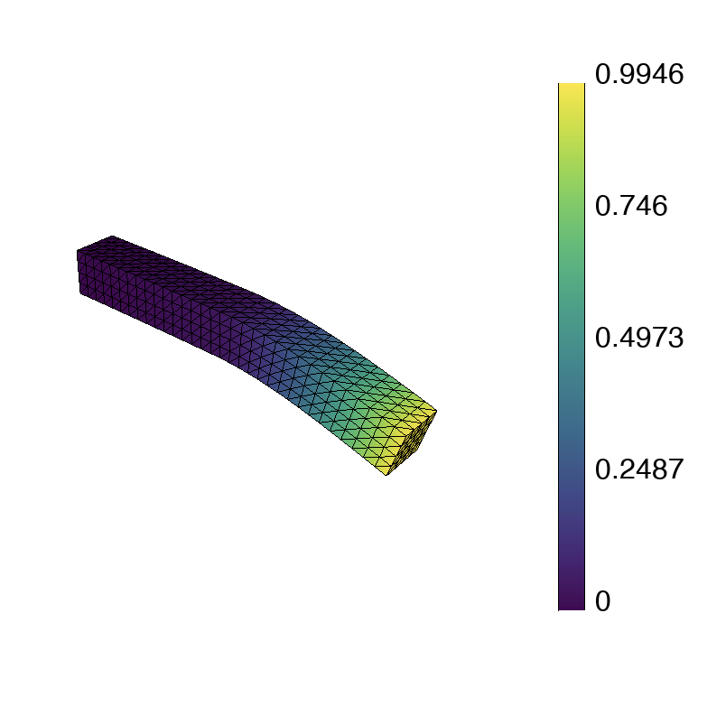

Linear Elasticity
by Aashutosh Kulakarni Prachet and Jeetika Patangia, Brown University
45 minutes basic
Lesson Objectives
Learn how to handle vectorial solution variables in MFEM.
Learn how to use Attributes to implement discontinuous material coefficients and multiple boundary conditions.
Note
Linear elasticity is a vectorial partial differential equation (PDE) that models how elastic bodies deform and develop stress under applied forces. It is widely used to analyze the stress-strain behavior of structural and mechanical systems. Beginning from the Conservation of Linear Momentum, we have
$$ \nabla \cdot {\sigma({u})} + f = \rho {\ddot{u}}, $$
where ${u} \in \mathbb{R}^n$ ($n = 2$ or $3$) is the vector-valued displacement field, ${\sigma}$ is the stress tensor, $f$ is the body force per unit volume and $\rho$ is the material density. Next, employing the Hooke's Law for an isotropic material, the stress tensor ${\sigma}$ corresponding to the displacement field ${u}$ is given as
$$ {\sigma({u})} = \lambda (\nabla \cdot {u}) {I} + \mu (\nabla {u} + \nabla {u}^T), $$
where $\lambda$ and $\mu$ are Lamé's constants which depend on material properties.
To solve this system of equations numerically, we convert it into a discrete problem with a finite number of unknowns. The Finite Element Method (FEM) proceeds by constructing a linear combination of basis functions to represent the solution $u$ over the domain $\Omega\subset\mathbb{R}^n$.
In particular, instead of calculating the exact analytic solution, we approximate each component $u_i$ as
$$ u_i \approx u_{i,h} := \sum_{j=1}^{m} c_{ij} \varphi_{j}, $$
where $u_{i,h}$ is the $i$-th component of the vector-valued finite element approximation, $u_h$, with unknown coefficients $c_{ij}$, and $\varphi_{j}$ are scalar-valued basis functions. The FEM basis functions, $\varphi_{j}$, which do not depend on $i$, are typically piecewise-polynomial functions that are only non-zero on small portions of the domain.
For this example problem, we compute a stationary, homogeneous solution to our PDE by setting the inertial term $\rho {\ddot{u}} = 0$ and neglecting the body force, $f = 0$.
To arrive an equation for the unknown coefficients $c_{ij}$, we consider the weak (or variational) form of the PDE. This is obtained by substituting (3) into (1), followed multiplying with a test function ${v}_h$ and integrating over the domain $\Omega$,
$$ \int_{\Omega} {v}_h \cdot \left( \nabla \cdot {\sigma}({u}_h) \right) \mathrm{d}{x} = 0. $$
After integrating by parts using the divergence theorem, we find
$$ \int_{\Omega} \nabla v_h : {\sigma}(u_h)\, \mathrm{d}{x} = \int_{\partial \Omega} v_h \cdot ({\sigma}(u_h) \cdot {n})\, \mathrm{d}S. $$
The boundary of the domain, $\partial\Omega$, is divided into two parts, the displacement (Dirichlet) boundary $\Gamma_D$ and the traction (Neumann) boundary $\Gamma_T$. In this example problem, the left-hand side of the boundary has a homogeneous ($u = 0$) displacement boundary condition, whereas the rest of the boundary has a traction boundary condition, ${\sigma} \cdot {n} = t$. In this problem, the traction force $t$ is non-zero only on the right-hand side of the boundary. Now using our constitutive law (2), which gives the relation between ${\sigma}$ and the displacement field ${u}$, we obtain the weak formulation
$$ \int_{\Omega} \lambda (\nabla\cdot u_h)(\nabla\cdot v_h) + \mu (\nabla u_h + \nabla {u}^T_h) : \nabla v_h \, \mathrm{d}{x} = \int_{\Gamma_T} v_h \cdot t\, \mathrm{d}S . $$
Letting $\{e_k\}_{k=1}^n \subset \mathbb{R}^n$ denote the standard Cartesian unit vectors and setting $v_h = \varphi_j e_k$, for each index $j$ and $k$, we can leverage the basis expansion formula (4) to rewrite (6) as
$$ {A x} = {b}, $$
with the vector $x\in\mathbb{R}^{nm}$ holding the unknown coefficients $c_{ij}$. This is a $mn \times mn$ linear system that can be solved directly or iteratively. Note that we are free to choose the computational mesh and the basis functions $\varphi_i$ as we see fit.
Note
Annotated Example 2
The source file examples/ex2.cpp implements the above FEM for a beam-shaped body consisting of two adjacent material subdomains. In particular, it sets $t=-0.01$ on the right-hand side of the boundary and enforces the Dirichlet and Neumann boundary conditions over the other corresponding subsets of the boundary.
Below we highlight selected portions of the example code and connect them with
the description in the previous section. You can follow along by browsing
ex2.cpp in your VS Code browser window. In the settings of this tutorial, the
visualization will automatically update in the GLVis browser window.
MFEM uses attributes and bdr_attributes to distinguish between subdomains and subsets of the domain boundary, respectively.
The computational mesh is provided as input (option -m) that could be a 2D or 3D domain made up of triangular/quadrilateral/tetrahedral/hexahedral elements, etc. (It defaults to beam-tri.mesh in line
50.) The code in
lines 73-84
loads the mesh from the given file, mesh_file and creates the corresponding MFEM
pointer *mesh of class Mesh. It then checks that the mesh file uploaded has at least two different materials and the correct number of boundary attributes.
Mesh *mesh = new Mesh(mesh_file, 1, 1);
int dim = mesh->Dimension();
if (mesh->attributes.Max() < 2 || mesh->bdr_attributes.Max() < 2)
{
cerr << "\nInput mesh should have at least two materials and "
<< "two boundary attributes! (See schematic in ex2.cpp)\n"
<< endl;
return 3;
}
The following code (lines
93-104)
refines the mesh uniformly to about 5,000 elements. You can easily modify the
refinement by changing the definition of ref_levels.
int ref_levels =
(int)floor(log(5000./mesh->GetNE())/log(2.)/dim);
for (int l = 0; l < ref_levels; l++)
{
mesh->UniformRefinement();
}
In the next block of code, lines 106-124, we create the finite element space, i.e., specify the finite
element basis functions $\varphi_j$ on the mesh. This involves the MFEM classes
FiniteElementCollection, which specifies the space (including its order,
provided as input via -o), and FiniteElementSpace, which connects the space
and the mesh. The dimension of the vector-valued finite elements are specified in the last argument of FiniteElementSpace. If we are using NURBS meshes, we use the NURBS space associated with our mesh.
if (mesh->NURBSext)
{
FiniteElementCollection *fec = NULL;
FiniteElementSpace *fespace = mesh->GetNodes()->FESpace();
}
else
{
FiniteElementCollection *fec = new H1_FECollection(order, dim);
FiniteElementSpace *fespace = new FiniteElementSpace(mesh, fec, dim);
}
cout << "Number of finite element unknowns: " << fespace->GetTrueVSize() << endl << "Assembling: " << flush;
The printed number of finite element unknowns corresponds to the size of the linear system $mn$ from the previous section.
The finite element degrees of freedom that are on the domain boundary are then extracted in lines 126-133. The Dirichlet boundary conditions are then imposed only on the boundary with the first boundary attribute, while the rest are given to Neumann boundary conditions.
Array<int> ess_tdof_list, ess_bdr(mesh->bdr_attributes.Max());
ess_bdr = 0;
ess_bdr[0] = 1;
fespace->GetEssentialTrueDofs(ess_bdr, ess_tdof_list);
The method GetEssentialTrueDofs takes a marker array of Mesh boundary
attributes and returns the FiniteElementSpace degrees of freedom that belong
to the marked attributes (the non-zero entries of ess_bdr).
The right-hand side $b$ is constructed in lines
135-158.
In MFEM terminology, integrals of the form in the right hand side of (6) are implemented using the AddBoundaryIntegrator function in the class LinearForm.
We now define the traction force over the entire boundary using a VectorArrayCoefficient object.
To this end, a pull_force vector is created, which specifies the vertical component of the pointwise traction force for each boundary attribute. Note that pull_force is only non-zero for the final boundary attribute, which corresponds to the right-hand beam boundary.
This vector is used to create a piecewise constant coefficient corresponding to the vertical component of the traction force density.
VectorArrayCoefficient f(dim);
for (int i = 0; i < dim-1; i++)
{
f.Set(i, new ConstantCoefficient(0.0));
}
{
Vector pull_force(mesh->bdr_attributes.Max());
pull_force = 0.0;
pull_force(1) = -1.0e-2;
f.Set(dim-1, new PWConstCoefficient(pull_force));
}
LinearForm *b = new LinearForm(fespace);
b->AddBoundaryIntegrator(new VectorBoundaryLFIntegrator(f));
cout << "r.h.s. ... " << flush;
b->Assemble();
The finite element approximation $u_h$ resides in the MFEM GridFunction object x associated to the vector-valued FiniteElementSpace fespace. Note that a GridFunction object can be
viewed both as the function $u_h$ in (2) as well as the vector of degrees of
freedom $x$ in (8). See lines
160-164.
GridFunction x(fespace);
x = 0.0;
We need to initialize x with the boundary values we want to impose as Dirichlet
boundary conditions.
Since we wish to assign zero-displacement boundary conditions on the only Dirichlet part of the boundary, we simple set x=0.0 in the whole domain.
We now move on to assembling the bilinear form.
We start by defining the Lamé parameters using the PWConstCoefficient class to specify different Lamé parameters in the two different
segments of the beam. The left-hand side of (6) is represented as a BilinearForm object, with
ElasticityIntegrator corresponding to the specific bilinear form. See lines
166-187.
PWConstCoefficient lambda_func(lambda);
PWConstCoefficient mu_func(mu);
BilinearForm *a = new BilinearForm(fespace);
a->AddDomainIntegrator(new ElasticityIntegrator(lambda_func,mu_func));
cout << "matrix ... " << flush;
if (static_cond) { a->EnableStaticCondensation(); }
a->Assemble();
MFEM supports different assembly levels for $A$ and many different integrators. Here we use the static condensation transformation to reduce the size of our original system to the remaining interfacial unknowns and assemble it.
The linear system (7) is formed and solved in lines 189-207:
SparseMatrix A;
Vector B, X;
a->FormLinearSystem(ess_tdof_list, x, *b, A, X, B);
cout << "Size of linear system: " << A.Height() << endl;
GSSmoother M(A);
PCG(A, M, B, X, 1, 500, 1e-8, 0.0);
The method FormLinearSystem takes the BilinearForm, LinearForm,
GridFunction, and boundary conditions (i.e., a, b, x, and ess_tdof_list);
applies any necessary transformations such as eliminating boundary conditions
(specified by the boundary values of x, applying conforming constraints for
non-conforming AMR, static condensation, etc.); and produces the corresponding
matrix A, right-hand side vector B, and unknown vector X.
In the above example, we then solve A X = B with
conjugate gradient iterations,
using a simple Gauss-Seidel
preconditioner. We set the maximum number of iterations to 500 and the relative error tolerance to 1e-8.
Solving the linear system is one of the main computational bottlenecks in the FEM. It can take many preconditioned conjugate gradient (PCG) iterations depending on the problem size, the difficulty of the problem, and the choice of the preconditioner.
Once the linear system is solved, we recover the solution as a finite element
grid function, and then visualize and save the final results to disk (files
displaced.mesh and sol.gf). See lines
210-248.
a->RecoverFEMSolution(X, *b, x);
ofstream mesh_ofs("displaced.mesh");
mesh->Print(mesh_ofs);
ofstream sol_ofs("sol.gf");
x.Save(sol_ofs);
socketstream sol_sock("localhost", 19916);
sol_sock << "solution\n" << mesh << x << flush;
Parallel Example 2p
Like most MFEM examples, Example 2 has also a parallel version in the source file
examples/ex2p.cpp, which
illustrates the ease of transition between sequential and MPI-parallel code. The
parallel version supports all options of the serial example, and can be executed
on varying numbers of MPI ranks, e.g., with mpirun -np. Besides MPI, in parallel
we also depend on METIS for mesh partitioning and
hypre
for solvers.
The differences between the two versions are small, and you can compare them for yourself by opening both files in your VS Code window.
The main additions in ex2p.cpp compared to ex2.cpp are:
Initializing MPI and hypre
Mpi::Init();
Hypre::Init();
Splitting the serial mesh in parallel with additional parallel refinement (Lines 141-149)
ParMesh *pmesh = new ParMesh(MPI_COMM_WORLD, *mesh);
int par_ref_levels = 2;
for (int l = 0; l < par_ref_levels; l++)
{
pmesh.UniformRefinement();
}
Using the Par-prefixed versions of the classes
ParFiniteElementSpace *fespace;
ParLinearForm *b = new ParLinearForm(fespace)
ParGridFunction x(fespace);
ParBilinearForm *a = new ParBilinearForm(fespace);
Parallel PCG with hypre's algebraic multigrid BoomerAMG preconditioner
HypreBoomerAMG *amg = new HypreBoomerAMG(A);
HyprePCG *pcg = new HyprePCG(A);
pcg->SetTol(1e-8);
pcg->SetMaxIter(500);
pcg->SetPrintLevel(2);
pcg->SetPreconditioner(*amg);
pcg->Mult(B, X);
Note
BoomerAMG preconditioner. Note, however, that
algebraic multigrid has a non-trivial setup phase, which can be comparable in
terms of time with the PCG solve phase. For more details, see the
Solvers and Scalability
page.
Serial and parallel runs
Both ex2 and ex2p come pre-built in the tutorial environment. You can see a
number of sample runs at the beginning of their corresponding source files when
you open them in VS Code. To get a feel for how these examples work, you can copy
and paste some of these runs from the source to the terminal in VS Code.
Try this!
./ex2 -m ../data/beam-tet.mesh

Warning
PATH so make
sure to add ./ before the executable, e.g.,
./ex2 -m ../data/beam-tet.mesh not
ex2 -m ../data/beam-tet.mesh.
Note
Try this!
mpirun -np 16 ex2p mpirun -np 16 ex2p -m ../data/beam-tet.mesh mpirun -np 48 ex2p -m ../data/beam-tet.mesh
Back to the Getting Started page.